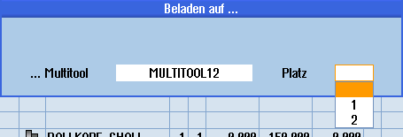

Voraussetzung
Ein Multitool ist in der Werkzeugliste angelegt.
Vorgehensweise
| | 1. | Die Werkzeugliste ist geöffnet. |
Multitool mit neuem Werkzeug bestücken |
 | 2. | Wählen Sie das gewünschte Multitool, positionieren Sie den Cursor auf einen leeren Multitoolplatz. |
 | 3. | Drücken Sie den Softkey "Neues Werkzeug". |
| | 4. | Wählen Sie über die entsprechende Auswahlliste, z.B. Favoriten, das gewünschte Werkzeug. |
Multitool beladen |
| | 2. | Wählen Sie das gewünschte Multitool, positionieren Sie den Cursor auf einen leeren Multitoolplatz. |
| | 3. | Drücken Sie den Softkey "Beladen". Das Fenster "Beladen mit..." wird geöffnet. |
 | 4. | Wählen Sie das gewünschte Werkzeug. |
Werkzeug auf Multitool beladen |
| | 2. | Positionieren Sie den Cursor auf das Werkzeug, das Sie in das Multitool laden möchten. |
| | 3. | Drücken Sie die Softkeys "Beladen" und "Multitool". Das Fenster "Beladen auf..." wird geöffnet. |
| | |  |
| | 4. | Wählen Sie das gewünschte Multitool und den Multitoolplatz, auf den Sie das Werkzeug beladen wollen. |